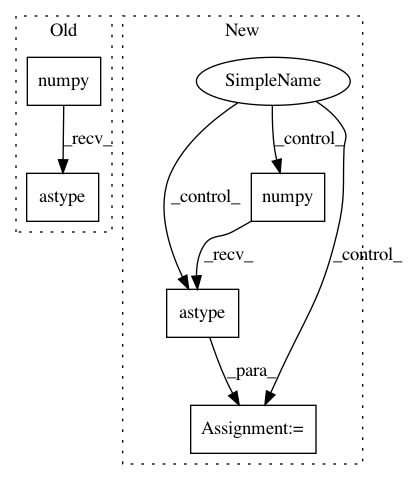

58086fa0a4fdd7c72a9ca51746a754fbd6644b91,models/common/distributed_executor.py,DistributedExecutor,_run_evaluation,#DistributedExecutor#Any#Any#Any#Any#Any#Any#,358
Before Change
for _ in range(eval_steps):
test_step(strategy, model, metric, test_iterator)
metric_result = metric.result().numpy().astype(float)
logging.info("Step: [%d] Validation metric = %f", current_training_step,
metric_result)
return metric_result
After Change
metric_result = metric.result()
if isinstance(metric, tf.keras.metrics.Metric):
metric_result = metric_result.numpy().astype(float)
logging.info("Step: [%d] Validation metric = %f", current_training_step,
metric_result)
return metric_result
In pattern: SUPERPATTERN
Frequency: 3
Non-data size: 5
Instances
Project Name: tensorflow/tpu
Commit Name: 58086fa0a4fdd7c72a9ca51746a754fbd6644b91
Time: 2019-08-06
Author: gardener@tensorflow.org
File Name: models/common/distributed_executor.py
Class Name: DistributedExecutor
Method Name: _run_evaluation
Project Name: tensorflow/tpu
Commit Name: 0789cc08dd92a43422469fc4973ecc972d032421
Time: 2019-08-06
Author: yeqing@google.com
File Name: models/common/distributed_executor.py
Class Name: DistributedExecutor
Method Name: _run_evaluation
Project Name: tensorflow/models
Commit Name: b1d9ac5b8b4d9e47ae146c77347d99e28e9a2701
Time: 2019-08-16
Author: hongkuny@google.com
File Name: official/transformer/v2/transformer_main.py
Class Name: TransformerTask
Method Name: train